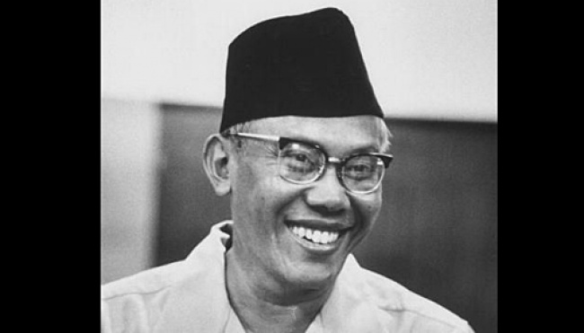

Sjafruddin Prawiranegara (28 Februari 1911 – 15 Februari 1989) adalah seorang negarawan dan ekonom Indonesia. Ia menjabat dalam berbagai peran selama kariernya, termasuk sebagai kepala pemerintahan dalam Pemerintahan Darurat Republik Indonesia ( presiden sementara Indonesia), sebagai Menteri Keuangan dalam beberapa kabinet, dan sebagai Gubernur pertama Bank Indonesia. Sjafruddin kemudian menjadi perdana menteri Pemerintahan Revolusioner Republik Indonesia, sebuah pemerintahan bayangan yang dibentuk sebagai oposisi terhadap pemerintah pusat.
Berasal dari Banten dengan keturunan Minangkabau, Sjafruddin aktif dalam politik setelah menyelesaikan pendidikan hukumnya. Pada tahun 1940, ia bekerja di kantor pajak dan bergabung dengan gerakan nasionalis selama masa pendudukan Jepang (1942–1945). Karena kedekatannya dengan pemimpin revolusioner Sutan Sjahrir, ia diangkat menjadi menteri keuangan dalam pemerintahan Republik selama Revolusi Nasional Indonesia (1945–1949). Dalam kapasitas ini, ia melobi dan mendistribusikan Oeang Republik Indonesia, mata uang pendahulu rupiah Indonesia.
Kembali Ke Beranda